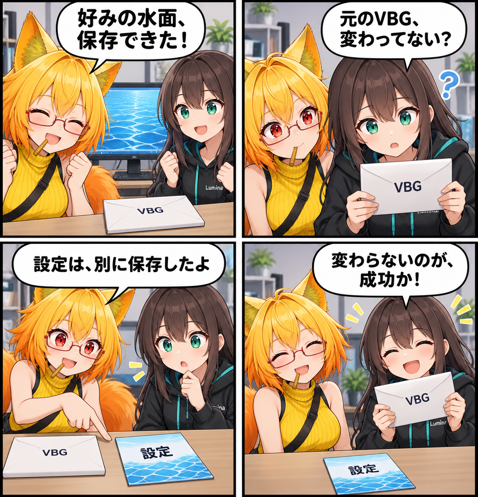

好みは別に、背景はそのまま。材質設定の保存先を見直した日
背景パーツを水面にしたときの調整内容を、元のVBGを書き換えずに保存するよう変更しました。同じ背景IDと内容の版に結び付けて、ユーザー設定として読み戻します。

見た目を調整しても、元の背景は保ちたい
背景の一部を水面にして、波の強さや透明度を自分の撮影に合わせる。こうした調整には、背景そのものと、使う人の好みという二つの情報があります。今回の主題は、この二つの保存先を分けたことです。水面化自体を新しく加えたのではなく、調整内容を残す仕組みを変更しました。
VBGの中を書き換える保存から、ユーザー設定へ
これまでの保存処理は、背景ファイルであるVBGの中へ材質設定を書き込み、ファイルを置き換えていました。今回の変更では、設定をアプリのユーザー設定フォルダーへJSON形式で保存します。元のVBGを組み直す処理は、この保存経路から取り除きました。
この分離は、内蔵ライブラリから展開した背景にも関わります。展開先は作り直せるキャッシュなので、そこへ利用者の調整を直接書き込むと、元データと個人設定の境界が曖昧になります。背景は背景のまま保ち、好みの設定を別に残す構成へそろえました。
同じ背景の、同じ版にだけ読み戻す
保存した設定には、背景を識別するIDと、その内容の版を記録します。背景を読み込むときは、この組み合わせに対応するユーザー設定を探し、見つかればVBG内の既定設定より優先して使います。
一方、背景を更新して内容の版が変わった場合は、以前の設定を自動では引き継ぎません。更新前後で対象パーツの対応が同じとは限らないためです。保存ファイルの識別情報が一致しない場合や読み出せない場合も、VBG内の既定設定へ戻る経路を用意しています。版をまたいだ設定移行は、今回の実装には含まれません。
「全部解除した」も、保存する情報
設定が一つもない状態と、設定ファイルがない状態は、意味が異なります。ユーザーがすべての上書きを解除して保存した場合は、空の設定を優先します。これにより、次に開いたときにVBG側の材質上書きが復活するのを抑えます。何も指定しないという選択も、きちんと残す変更です。
技術的なポイント
- 保存先は
UserData/Settings/BackgroundMaterialOverrides/。VBG本体や内蔵ライブラリの展開キャッシュへは書き戻しません。 - 設定を結び付けるキーは
vbgIdとcontentRevision。ファイル名はこの組み合わせのハッシュから作ります。 - JSONには識別情報と材質設定を収め、既存の
AtomicFileStore経由で書き込みます。 - 読み込み側も変更し、外部設定を解決してから材質上書きの実行処理へ渡します。
- 回帰テストには、保存前後のVBGのバイト列が変わらないこと、設定の読み戻し、空の設定が既定値に優先することを確認する処理を追加しました。
ほかにも進んだこと・補足
同じ期間には、アイテム・機材一覧のファイル探索の非同期化、背景読み込みを中断する際の後始末、Unityのテーマプレビューをシーン保存前に戻す処理も入りました。VRC Constraintの参照先がUnity特有の「見かけ上のnull」になったときの代替先選択も修正しています。
前回取り上げたVBG読み込み・出力の追加最適化や、EditorメニューのVRASへの統一も進みました。Runtime API／MCPについて、今回のコミットから確認できるのは仕様書の追加・拡張です。未コミットの関連コードを、完成済みの操作機能としては扱っていません。
この記事は集計終了時点のコミット済みソースと仕様書に基づきます。この日記制作中にUnityの実行、実機確認、性能計測、回帰テストの実行は行っていません。テストについて述べた箇所は、追加された検査内容の紹介です。
4コマの裏話
保存できたと喜ぶろひの横で、ルミナが「元のVBGが変わっていない」と気づきます。けれど、それこそが今回の狙い。設定は別に保存されていて、最後は「変わらないのが成功」と納得する寸劇にしました。封筒とメモは保存先の違いを表す比喩で、実際の操作画面や検証の実録ではありません。
まとめ
背景の材質設定を、VBGの書き換えからユーザー設定への保存に変更しました。元の背景を保ち、調整は同じ背景・同じ版へ読み戻す。見た目の自由と、保存するデータの境界を両立させるための見直しです。
本日のひとこと： 変わっていないことが、成功のしるしになる日もある。